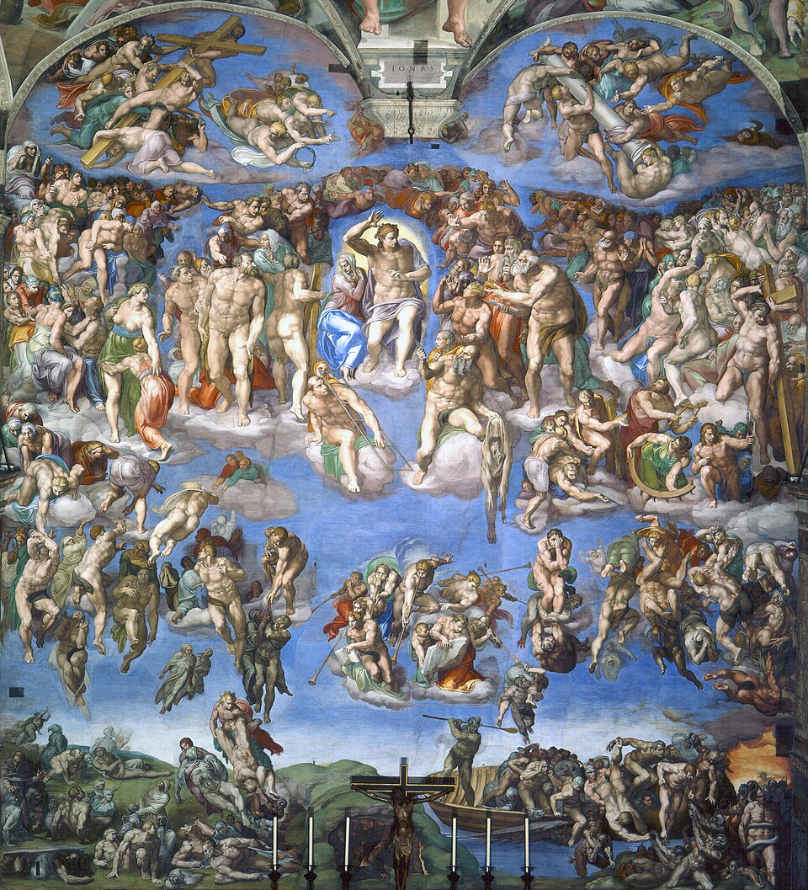
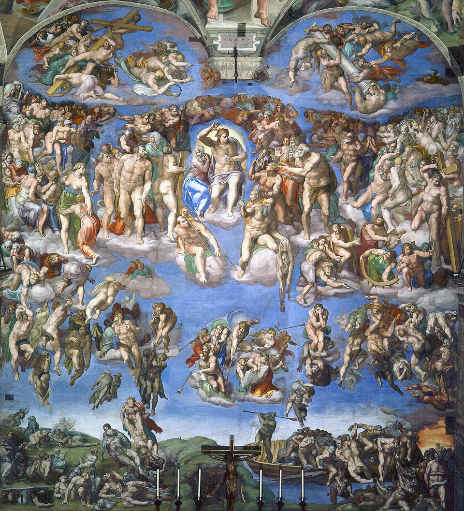
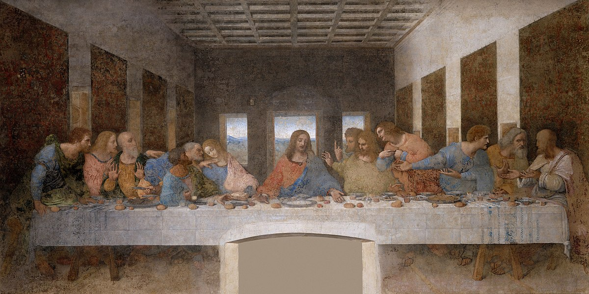
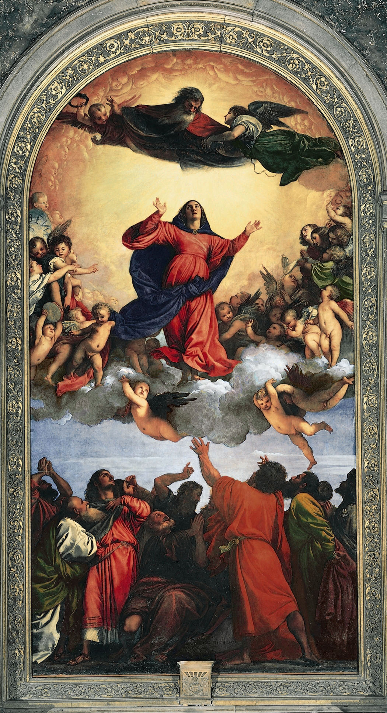
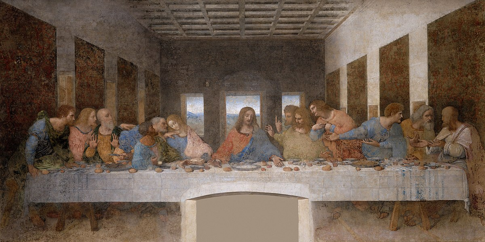
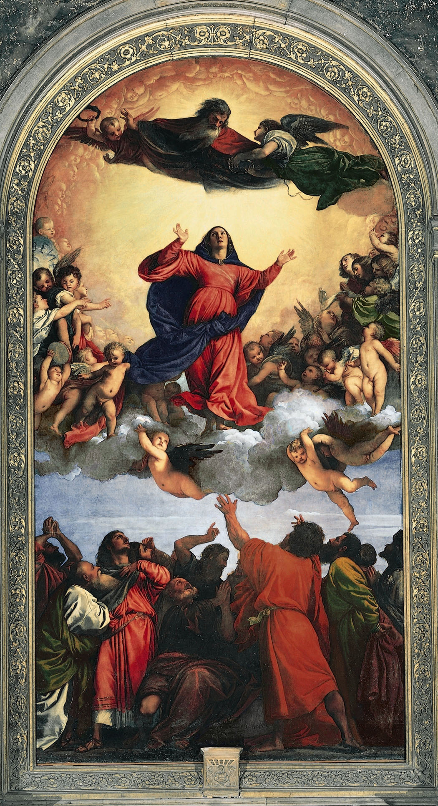

Purpose
By automatically linking visual elements in artworks to scholarly descriptions, ArteFact's ambition is to empower researchers, students, and art enthusiasts to discover new connections and understand artworks in their broader academic context.
- Upload or select artwork images and find scholarly passages that describe similar visual elements
- Search by region - crop specific areas of paintings to find text about those visual details
- Filter results by art historical topics or specific creators
- Access scholarly sources with full citations, DOI links, and BibTeX references
What Powers ArteFact?
ArtContext Research Pipeline: A computational system that automatically harvests and processes thousands of art history texts.
Data Collection
Automatically gathers painter information from Wikidata and scholarly articles from OpenAlex database
Text Processing
Downloads academic PDFs, converts to text, and extracts meaningful sentences
AI Analysis
Uses PaintingCLIP (a specialised art-focused AI model) to understand visual-textual connections
Smart Matching
Tries to find the most relevant scholarly passages for any artwork image you provide
App Features
Image Input
- Drag & drop upload
- Choose from historical examples
- Crop and edit images
- Image history tracking
Region Analysis
- 7×7 grid overlay
- Click-to-analyze specific areas
- Visual feedback highlighting
- Region-specific text retrieval
Smart Filtering
- Topic-based filtering
- Creator/artist selection
- Model switching (CLIP vs PaintingCLIP)
- Real-time result updating
Academic Tools
- Full citation information
- Work image gallery
- One-click BibTeX copying
- DOI links to sources
- Embedded document previews
About This Project
Created by: Samuel Waugh
Supervised by: Dr Stuart James, Department of Computer Science, Durham University
Supported by: N8 Centre of Excellence in Computationally Intensive Research (N8 CIR)
Purpose: This project was developed as part of the N8 CIR 2025 Internship programme to explore how AI can help bridge the gap between visual art and textual scholarship, making art historical research more accessible and discoverable.
Why it matters: By automatically linking visual elements in artworks to scholarly descriptions, ArteFact's ambition is to empower researchers, students, and art enthusiasts to discover new connections and understand artworks in their broader academic context.
Technical Details
ArteFact uses PaintingCLIP, a fine-tuned version of OpenAI's CLIP model specialised for art historical content. The system processes over thousands of scholarly articles to create a comprehensive knowledge base of art historical descriptions.

 

.jpg)
.jpg) 


